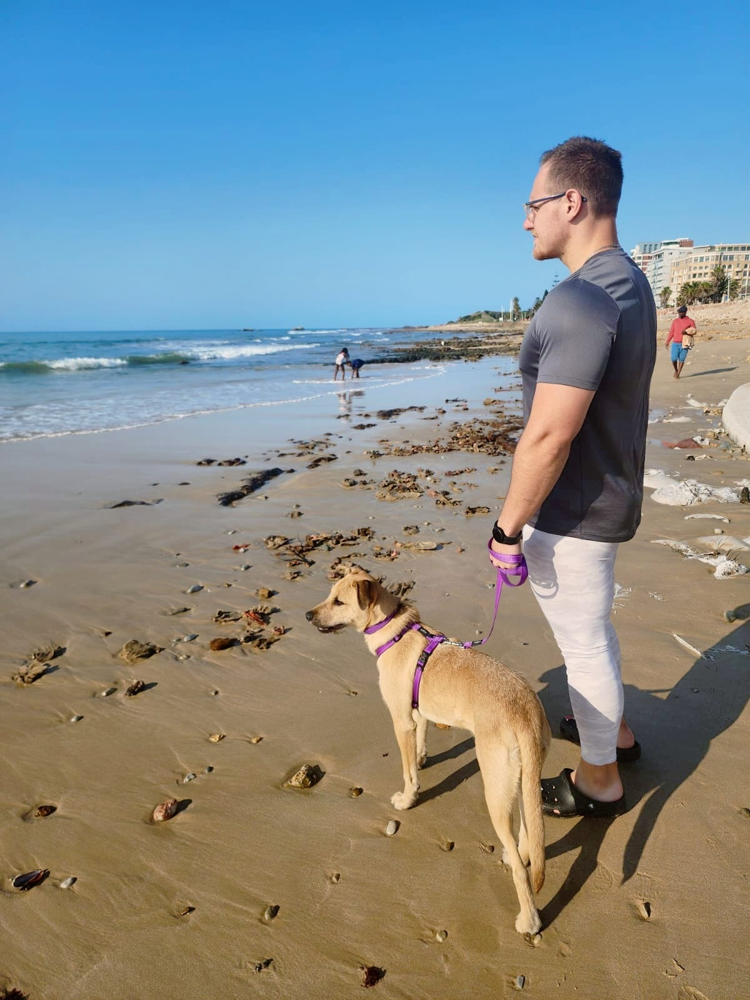

D'Jan van Rhyn

My Resume
Summary
I am hardworking and can adapt quickly to new challenges, I work well under high pressure and will deliver only the best of what is expected of me
Education
- Certfied Personal Trainer
- Online Personal Trainer
- CPR and First Aid
- Athletic Nutrition CPD
- Certification in Sports Psychology
- Qualified rugby coach
- Property Practioner
Work Experience
- Personal Trainer - Fusion Fitness
January 2016 - August 2022
- Training Clients and assuring their safety
- Personal Trainer - Muscle Den
August 2022 - Present
- Training Clients and assuring their safety
- Property Practioner - Harcourts Limitless
May 2022 - Present
- Evaluating and selling of property
- Rugby Skills and Development
May 2022 - Present
- Developing rugby skills in kids from the ages of 3-10 years of age
Experience
- Strong Knowledge of Exercise Science: A deep understanding of how the body works and responds to exercise.
- Excellent Communication and Interpersonal Skills: The ability to clearly explain exercises, actively listen to clients, build rapport, and provide constructive feedback.
- Motivation and Encouragement: Inspiring clients to stay committed and push through challenges.
- Adaptability and Problem-Solving Skills: Tailoring programs to individual needs and adjusting plans as necessary.
- Professionalism and Ethics: Being reliable, punctual, and maintaining client confidentiality.
- Empathy and Understanding: Connecting with clients on a personal level and providing appropriate support.
- Patience: Recognizing that progress takes time and that each client learns at their own pace.
- Attention to Detail: Creating personalized programs and monitoring client progress effectively.
- Commitment to Continuous Learning: Staying updated on the latest research and trends in the fitness industry.
- Passion for Health and Fitness: Leading by example and genuinely caring about their clients' well-being.
Property Practioner
- Market Knowledge: I have a deep understanding of local property markets, including pricing trends, demand and supply, and factors influencing property values.
- Sales and Negotiation Skills: I am adept at marketing properties effectively, attracting potential buyers or tenants, and I can skillfully negotiating terms to reach successful agreements.
- Legal and Regulatory Compliance: A crucial aspect of my experience is navigating the complex legal framework governing property transactions, including the Property Practitioners Act and other relevant legislation. They ensure all processes are compliant and ethical.
- Client Relationship Management: Building and maintaining strong relationships with clients is vital. I excel at understanding client needs, providing tailored advice, and ensuring a smooth and satisfactory transaction process.
- Networking: Over time, I have built a valuable network of contacts, including other agents, conveyancers, mortgage brokers, and potential clients, which can be beneficial in facilitating transactions.
- Problem-Solving: Real estate transactions can sometimes present challenges. I am skilled at identifying and resolving issues effectively to keep deals on track.
- Administrative and Organizational Skills: Managing listings, paperwork, appointments, and communication requires strong organizational and administrative abilities.
- Marketing and Technology: I understand how to leverage various marketing tools and technologies to promote properties and reach a wider audience.
- Coding, Front and Back end Web Development
- I have a basic understanding of JavaScript coding aswell as an understanding in front/back end web development. I am currently building 5 diffrent websites, each with it's own challenges. I am a quick learner and enjoy working with diffrent coding languages.
Skills
- Strong Verbal and written communications
- Outstanding orginizational skills
- Detail-orientated
- Strong sense of problem solving
- I am a creative thinker
- Excellenct time managing skills
About Me
Contact Me